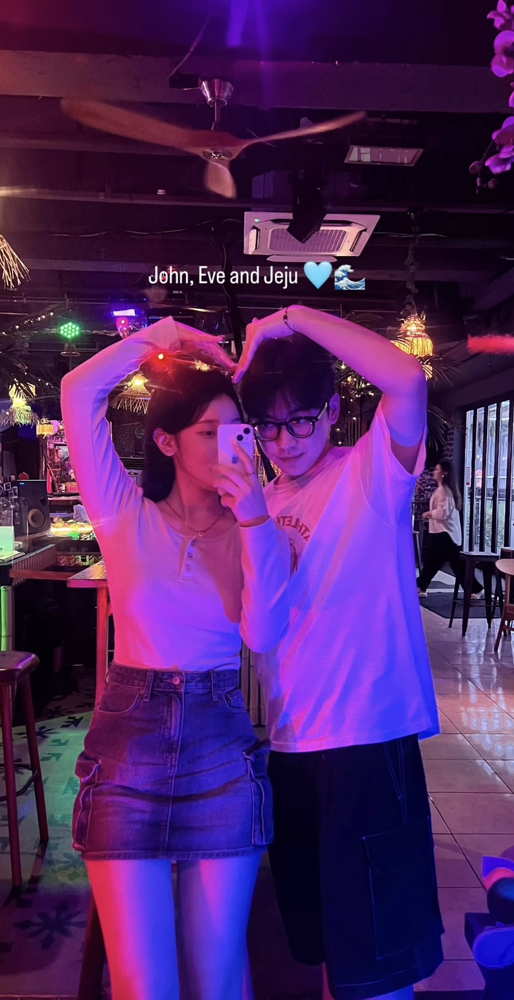
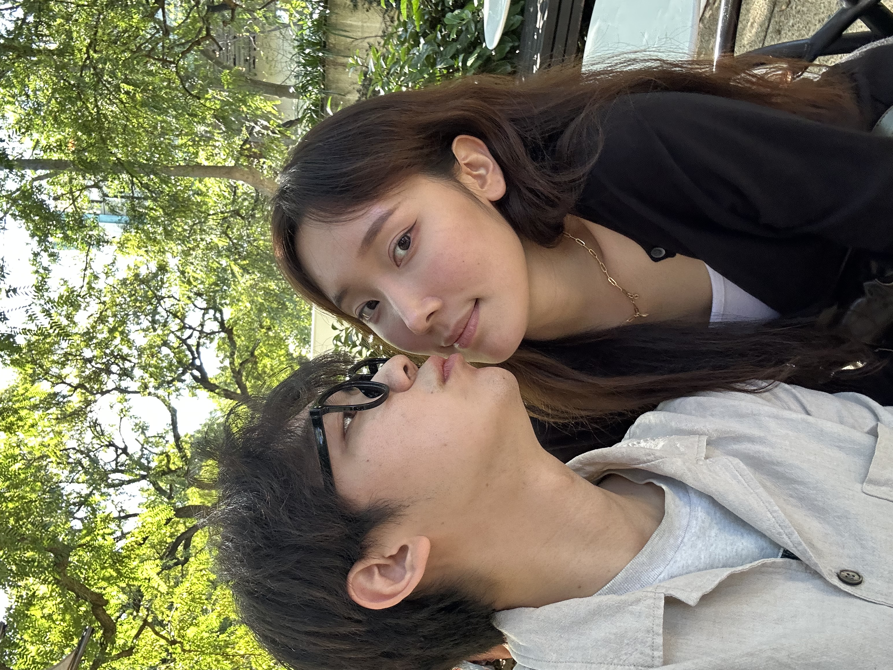

TO. 윤소빈
소빈아,
It’s already been a year since we first met.
The time I’ve spent with you has been truly unforgettable, and I’m so excited for everything that lies ahead of us. I might not have prepared as much for our first anniversary as you did, but I want you to know that not a single word in this letter was written lightly.
There were moments between us that weren’t easy, and I even hesitated for a moment about whether or not to write this. But because I love you so much and cherish you so deeply, I’m sitting down to write this now.
I believe the fact that we’ve come this far together shows just how serious I am about us.
To me, you are still such a lovely person. I’m always grateful for the way you put me first and take such good care of me.
I truly believe we can keep doing great together. In the future, I want to live my life with my eyes only on you.
I trust the person you are today, and I have no regrets about this choice. This is the first time I’ve ever loved someone this much.
That’s why my feelings are so sincere, and why you are even more precious to me.
Thank you for this past year, and I love you.